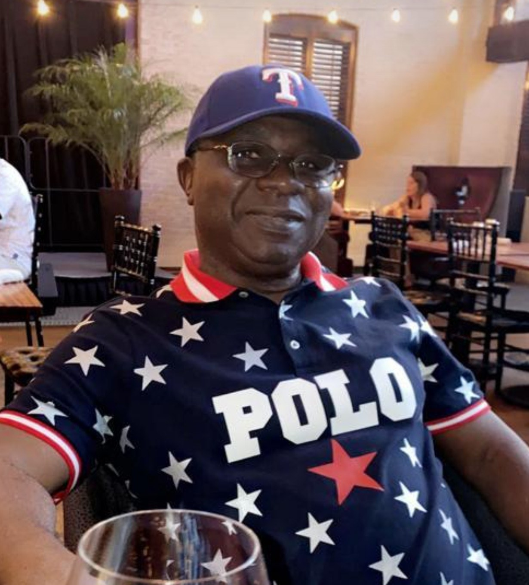
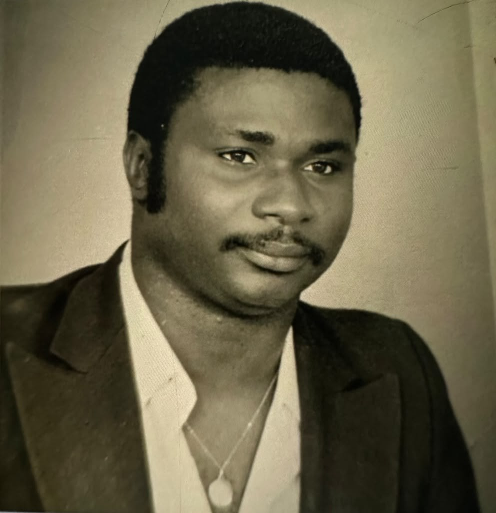

Visitations & viewing
The TOGBEY Family Residence
Tokoin Kodomé District · 3rd lane on the right · opposite the market
View on mapIn Loving Memory of Our Dearly Beloved

Called home to God on 24 May 2026 at CHU Sylvanus Olympio, in his 78th year.
You will forever remain in our hearts.
In remembrance
Dr. TOGBEY Kwamy Maoussi Félix was born on 20 November 1948 and was called home to God on 24 May 2026, at CHU Sylvanus Olympio, in his 78th year.
The only child born to both his parents, TOGBEY Sossou Mathias and SABLIKOU Omoloyè Anastasie, and the eldest of all his brothers and sisters, the late TOGBEY Kwamy Maoussi Félix “de Valois” was born on Saturday 20 November 1948 in Tcharé-Baou, in the Ogou prefecture of Togo. The son of a modest schoolteacher, he was a most diligent student, earning his série-D baccalauréat with the assez bien grade and placing first among the candidates of his examining board, at the Lycée Béhanzin in Porto-Novo, Benin, in 1971. Awarded a scholarship by the Belgian Government, he began his studies in veterinary medicine in Liège, Belgium. After brilliantly completing his first university year — the only one of the eight recipients of that competitive scholarship to advance to the next year — Félix, for reasons of his own, chose to return to Togo to study human medicine, a field in which he believed he could be of greater service to his country. And so, in 1981, he earned his State Doctorate in Medicine, after defending a thesis awarded the highest honours (très honorable), the congratulations of the jury and authorisation for its exchange among universities, at the Université du Bénin (UB, now the University of Lomé) — becoming part of the second graduating class of doctors trained at the country's faculty of medicine since its founding in Togo. Once again, it was on a new scholarship that this future pioneer of Togolese medicine pursued these studies at the UB.
The month after he received his diploma, Dr. Togbey was immediately recruited into the civil service, beginning his career as a physician in July 1981 at the hospital in Tabligbo (Yoto prefecture), before returning a few years later to Lomé to take up, from 1983, the post of Director of the Lomé Health Centre (Woétrivi Condji) — at the time the second most important health facility in Lomé after the CHU-Tokoin. As his career advanced, he was assigned in 1985 to the Bè Health Centre, then in a dire state. It was under his leadership, and through a partnership with German Cooperation in Togo via the GTZ project, that by his rigour and dedication Dr. Togbey raised this modest health centre to the status of a Secondary Hospital — a referral institution of excellence, of which he became the first Director under this new standing. Alongside his duties, he embraced an academic career as a lecturer in physiology at the UB faculty of medicine. He was also the occupational physician of the EDITOGO printing house. A great football enthusiast, he served for several years as the sports physician of the national football team; in that capacity he led the medical delegation that accompanied the Sparrowhawks (Éperviers) of Togo to their first World Cup appearance, in the under-20 category, in 1987 in Chile. After several years of preparation toward becoming a CAMES-accredited Associate Professor (Maître de Conférences Agrégé), he was awarded an American scholarship to pursue further studies in the United States, thus turning from his academic career in 1994. He went on to earn his Master's degree in Public Health from the University of Hawaii at Honolulu in 1996.
Returning to the civil service after earning this degree, Dr. Togbey — only a few months after a brief tenure at the Ministry of Health — secured his first non-governmental post with the NGO CARE International in 1996, where he jointly led projects in Togo, Benin and Ghana. Ever eager to take on new challenges, he obtained another position with UNICEF Togo as a Health Programmes Administrator in 2000. The mark of excellence he left with his former employer CARE International earned him a recall by that institution in 2003, this time to serve as Chief of Party on the five-year Keneya Ciwara Project in Mali. Finding that it could no longer do without his exceptional gifts, the organisation entrusted him successively with posts in various countries — notably the USA and Côte d'Ivoire — before bringing him back once more to Mali, where he retired in 2017. At the very start of his retirement, only months after handing over to his successor, CARE called upon him again in Mali, where he once more lent his technical assistance for several months on a project. That mission accomplished, he chose this time to step away for good, to henceforth fully enjoy a well-deserved retirement, after years of hard work throughout his active life.
A Baptist Christian, a man of faith and principle, deeply disciplined, Dr. Togbey — despite his many divine blessings and abundant successes — always knew how to keep his humility. His many virtues — integrity, punctuality, self-sacrifice, resilience, love of neighbour, discretion and his love of peace, to name but a few — are beyond any doubt.
He was a lover of nature and a great devotee of reading and travel. Dr. Togbey spent much of his retirement savouring his travels around the world, and loved to spend time with his children and grandchildren. Anything could be wrested from him but his love for his home village, Agomé-Glozou, where he so loved to live — not to mention the long morning walks on which he would so often share, with his children, friends and loved ones, the wonders of the landscapes they crossed. Judging that he had completed his mission on this earth, God chose to call him home on Sunday 24 May 2026 — Pentecost Sunday, as though in a powerful sign — leaving behind his wife, six (6) children and thirteen (13) grandchildren.
May his soul rest in peace.
Schedule
Condolences will be received from 4:00 PM to 8:00 PM :
Every Thursday, Friday and Saturday
from 28 May to 20 June 2026
From Monday 22 to Wednesday 24 June 2026
VENUE
Tokoin Kodomé District · 3rd lane on the right · opposite the market
Getting there
Tap "View on map" to open directions in your maps app.
Visitations & viewing
Tokoin Kodomé District · 3rd lane on the right · opposite the market
View on mapVigil & funeral mass
Tokoin-Solidarité · Lomé
View on mapBurial
Bas-Mono
View on mapLive
Both ceremonies will be streamed live, for those who cannot attend in person. The video will appear here when the time comes.
Downloads
In pictures
A few images in memory of a life loved and respected.



Guest book
Leave a message of support for the family. Your words will be shared with them.
Your contact details stay private and are never published. Only messages you choose to share may appear on the Tribute Wall, after review by the family.
Shared messages
A few messages their authors chose to share publicly, in tribute to a life loved and respected.
Rest in Peace.
We love you!
Dr. TOGBEY Kwamy Maoussi Félix
1948 – 2026
Your message has been received.
The family is grateful for your words of support.
If you chose to share it, your message will appear on the Tribute Wall after the family has reviewed it.
You can watch the ceremony live, or continue to the site as usual.
{kind=link}
{kind=link}